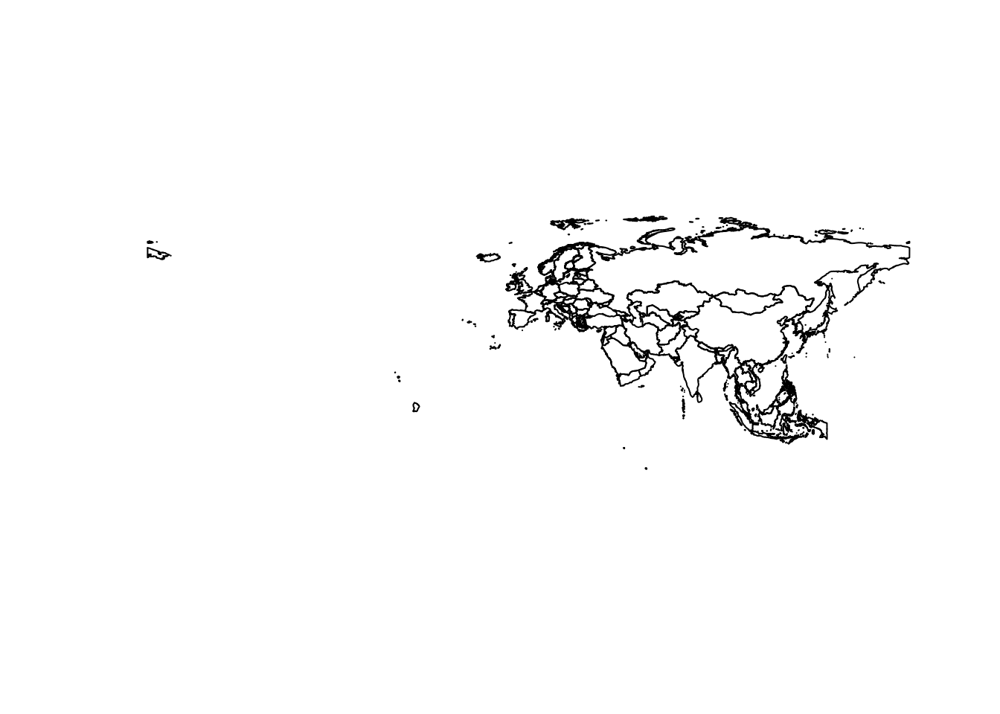
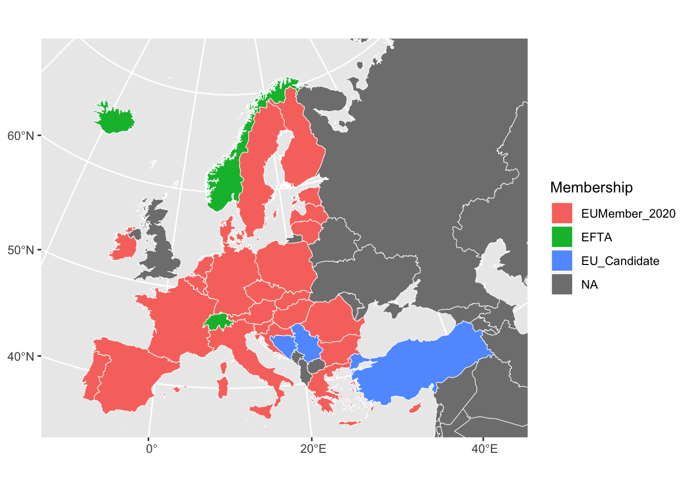
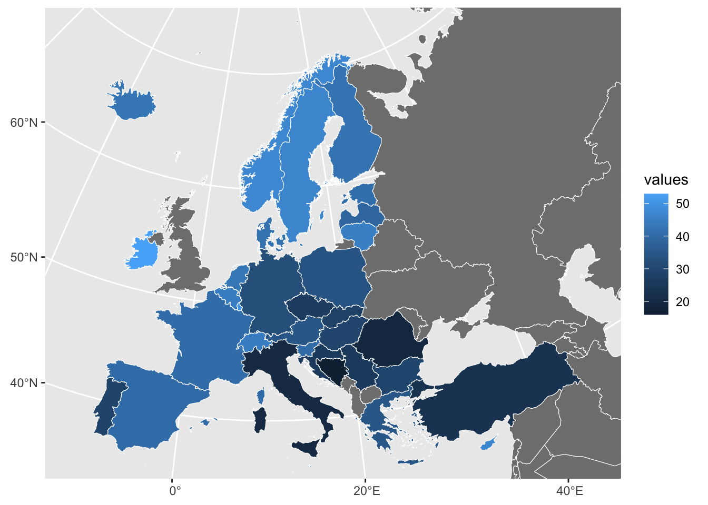

EUEduc <- get_eurostat_data("edat_lfse_03")
ESNames <-read_csv('https://raw.githubusercontent.com/hulseyjw/POSC644/refs/heads/main/Week3/ESNames.csv', col_types = "ffffnf")Mapping in R
Week 4: Mapping and Spatial Data
Often, our data will have a spatial component to it, which just means that location matters. Location might matter for any number of reasons, including what other countries are nearby, climate or historical factors.
In this class, we’ll learn to make thematic maps or choropleth maps in R using Eurostat data. These are the maps where the color of each shape is based on the value of an associated variable.In recent years, this has gotten much easier to do.
We’ll also discuss other ways of thinking about spatial data, including the pitfalls of presenting data as spatial, when that might not be the most important aspect of the data.
We won’t be covering how to plot points on a map, but that would be a relatively easy next step.
Data
Once again we’re going to work with the Educational Attainment Data from Eurostat. I’ve also created a dataset that has full names for the countries and some basic information about them.
Joining the datasets
Here we’re joining the Educational Attainment data with the country names and some basic information about the countries.
EUEduc_ESN <- EUEduc %>% # specifiies that we are storing the result of these steps back in EUEduc, which is a little dangerous
left_join(ESNames, by=c("geo"="CODE"))# left join keeps all of the observations from EUEduc and adds the columns from ESNames that match (but not those from ESNames that don't match). It specifies that we're joining based on the "geo" and "code" variables.
head(EUEduc_ESN)Key: <sex, age, unit, isced11, geo>
sex age unit isced11 geo time values countryname Membership
<fctr> <fctr> <fctr> <fctr> <fctr> <fctr> <num> <fctr> <fctr>
1: F Y15-64 PC ED0-2 AT 1995 41.4 Austria EUMember_2020
2: F Y15-64 PC ED0-2 AT 1996 39.6 Austria EUMember_2020
3: F Y15-64 PC ED0-2 AT 1997 36.6 Austria EUMember_2020
4: F Y15-64 PC ED0-2 AT 1998 36.0 Austria EUMember_2020
5: F Y15-64 PC ED0-2 AT 1999 35.3 Austria EUMember_2020
6: F Y15-64 PC ED0-2 AT 2004 28.4 Austria EUMember_2020
EA20 AccYr ColdWar
<fctr> <num> <fctr>
1: Yes 1995 Neutral
2: Yes 1995 Neutral
3: Yes 1995 Neutral
4: Yes 1995 Neutral
5: Yes 1995 Neutral
6: Yes 1995 NeutralThematic Mapping in R
Thematic maps, also called chloropleth maps, are maps where the color of each shape is based on the value of an associated variable.
To work with maps in R, we need to use the sf and ‘giscoR’ packages. ‘sf’ has the tools to work with spatial data, and ‘giscoR’ has the tools to get the territorial boundaries from the GISCO database. So, you’ll need to install these packages before using them for the first time.
library(giscoR)
library(sf)Linking to GEOS 3.11.0, GDAL 3.5.3, PROJ 9.1.0; sf_use_s2() is TRUEGetting Country-level Maps
The first important choice with regard to spatial data is the level of aggregation. In this case, we’re going to use country-level data.
Here, we start by using giscoR to get the country-level maps, and the sf package plot the boundaries of the countries.
crsLONGLAT <- "+proj=longlat +datum=WGS84 +no_defs +ellps=WGS84 +towgs84=0,0,0" # this creates a variable with information about the projection we want our map to be.
cntrys <- giscoR::gisco_get_countries( # this function gets the country-level maps from GISCO
year = "2020",
resolution = "3",
region = c("Europe", "Asia")
) |>
sf::st_transform(crsLONGLAT) # this function transforms our new shape file into the projection we want.
#names(cntrys)
plot(sf::st_geometry(cntrys)) # this plots the shape file. 
Merging in Education Data
The map information we just downloaded and named ‘cntrys’ is in a shape file format. Shape files combine the shape information about the units (in this case countries), with a data table full of information about the units.
summary(cntrys) CNTR_ID CAPT CNTR_NAME NAME_ENGL
Length:100 Length:100 Length:100 Length:100
Class :character Class :character Class :character Class :character
Mode :character Mode :character Mode :character Mode :character
EFTA_STAT CC_STAT NAME_FREN ISO3_CODE
Length:100 Length:100 Length:100 Length:100
Class :character Class :character Class :character Class :character
Mode :character Mode :character Mode :character Mode :character
SVRG_UN EU_STAT NAME_GERM geometry
Length:100 Length:100 Length:100 MULTIPOLYGON :100
Class :character Class :character Class :character epsg:NA : 0
Mode :character Mode :character Mode :character +proj=long...: 0 We want to merge in our college education data with the shape file we’ve just downloaded from GISCO. We can merge it like we do any other dataset. First, I use filter to simplify the Education data so it has only the rows (observations that we want, then I join that new dataset to the shape file. I give the new shape file a new name, ‘cntrys_Educ’.
EUEduc_ESN_M <- EUEduc_ESN %>% filter(time == 2021, age == "Y25-64", isced11 == "ED5-8", sex == "T")
cntrys_Educ <- cntrys %>%
left_join(EUEduc_ESN_M, by=c("CNTR_ID"="geo"))
head(cntrys_Educ)Simple feature collection with 6 features and 22 fields
Geometry type: MULTIPOLYGON
Dimension: XY
Bounding box: xmin: 1.41887 ymin: 22.62806 xmax: 74.88986 ymax: 49.01847
Geodetic CRS: +proj=longlat +datum=WGS84 +no_defs +ellps=WGS84 +towgs84=0,0,0
CNTR_ID CAPT CNTR_NAME NAME_ENGL
1 AD Andorra la Vella Andorra Andorra
2 AE Abu Dhabi الإمارات العربية المتحدة United Arab Emirates
3 AF Kabul افغانستان-افغانستان Afghanistan
4 AL Tirana Shqipëria Albania
5 AM Yerevan Հայաստան Armenia
6 AT Vienna Österreich Austria
EFTA_STAT CC_STAT NAME_FREN ISO3_CODE SVRG_UN EU_STAT
1 F F Andorre AND UN Member State F
2 F F Émirats arabes unis ARE UN Member State F
3 F F Afghanistan AFG UN Member State F
4 F T Albanie ALB UN Member State F
5 F F Arménie ARM UN Member State F
6 F F Autriche AUT UN Member State T
NAME_GERM sex age unit isced11 time values
1 Andorra <NA> <NA> <NA> <NA> <NA> NA
2 Vereinigten Arabischen Emirate <NA> <NA> <NA> <NA> <NA> NA
3 Afghanistan <NA> <NA> <NA> <NA> <NA> NA
4 Albanien <NA> <NA> <NA> <NA> <NA> NA
5 Armenien <NA> <NA> <NA> <NA> <NA> NA
6 Österreich T Y25-64 PC ED5-8 2021 34.6
countryname Membership EA20 AccYr ColdWar geometry
1 <NA> <NA> <NA> NA <NA> MULTIPOLYGON (((1.730232 42...
2 <NA> <NA> <NA> NA <NA> MULTIPOLYGON (((56.26266 25...
3 <NA> <NA> <NA> NA <NA> MULTIPOLYGON (((66.79499 31...
4 <NA> <NA> <NA> NA <NA> MULTIPOLYGON (((19.75089 42...
5 <NA> <NA> <NA> NA <NA> MULTIPOLYGON (((45.43765 40...
6 Austria EUMember_2020 Yes 1995 Neutral MULTIPOLYGON (((15.14986 48...This prepares to make our plot by setting up some parameters that we need for our map, such as the projection we want to use (I’ve just copied this from someone else) and the lattitude nd longitude boundaries of the map, since we don’t want to plot the whole world.
crs_lambert <- "+proj=laea +lat_0=52 +lon_0=10 +x_0=4321000 +y_0=3210000 +datum=WGS84 +units=m +no_defs"
xmin <- -10.66
ymin <- 34.5
xmax <- 45
ymax <- 71
bbox <- sf::st_sfc(
sf::st_polygon(
list(
cbind(
c(
xmin,
xmax,
xmax,
xmin,
xmin
),
c(
ymin,
ymin,
ymax,
ymax,
ymin
)
)
)
), crs = 4326
)
lambert_bbox <- sf::st_transform(
bbox,
crs = crs_lambert
)
bb <- sf::st_bbox(lambert_bbox)Once this is done, we can plot the map. Here, I’m plotting the map with the ‘Membership’ variable, which is a variable that tells us whether a country is a member of the EU or not.
cntrys_Educ %>%
ggplot() +
geom_sf(data = cntrys_Educ,
mapping = aes(
fill = Membership
),
color = "white",
size = 0.15
) +
coord_sf(
crs = crs_lambert,
xlim = c(bb["xmin"], bb["xmax"]),
ylim = c(bb["ymin"], bb["ymax"]),
)
This map uses the ‘values’ variable, which is the percentage of the population with a college degree.
cntrys_Educ %>%
ggplot() +
geom_sf(data = cntrys_Educ,
mapping = aes(
fill = values
),
color = "white",
size = .15
) +
coord_sf(
crs = crs_lambert,
xlim = c(bb["xmin"], bb["xmax"]),
ylim = c(bb["ymin"], bb["ymax"]),
)
There is a lot that we can do to improve our maps, but generating them is a good first step.